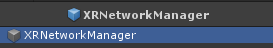

Detail of Network Manager
This page described the detail of V Gear_Networking (Script).
Note: This page is still Under Construction.

| Type | User type of current connection. |
| Address | Address of connection. |
| Port | Port of connection. |
| Network Name | Network user name of current user. |
| Max Connections | Maximum number of users. |
| Auto Connect | Enable to auto start connection on start. |
| Reconnect | Auto reconnect times when connection is failed. |
| Connecting Buffer | Buffer for connection. |
| Data Path | External networking setting file path of XR system. Recommend to use "../Resources/Networking.json, The detail of data will be introduced below. |
| Head Index | Default head entity model index. |
| Right Hand Index | Default right hand entity model index. |
| Left Hand Index | Default left hand entity model index. |
| Head Entity | The name of head entity. |
| Right Hand Entity | The name of right hand entity. |
| Left Hand Entity | The name of left hand entity. |
| Entity Display | Entity type to be displayed. |
| Identity Display | Identity type to be displayed. |
| Head Prefabs | Networking head prefabs. The prefab will be instantiated with the head index read from the networking data of the executable. |
| Right Hand Prefabs | Networking right hand prefabs. The prefab will be instantiated with the right hand index read from the networking data of the executable. |
| Left Hand Prefabs | Networking left hand prefabs. The prefab will be instantiated with the left hand index read from the networking data of the executable. |